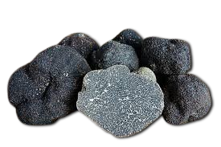
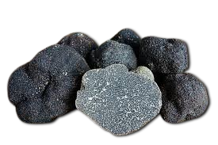

Descripción morfológica
Tuber melanosporum, conocido como "trufa negra" o "trufa del Périgord", es un ascomiceto hipogeo de la familia Tuberaceae. Sus cuerpos fructíferos (2-10 cm de diámetro) son irregulares, con superficie negra y verrugosa (de 3-6 mm de altura). La gleba es inicialmente blanquecina, luego grisácea y finalmente negra con venas blancas ramificadas al madurar. Desprende un aroma intenso a tierra húmeda, gas y cacao, con notas de frutos secos. Las esporas son elipsoidales, reticuladas y miden 25-50 × 20-35 µm.
Características distintivas
- Peridio: Negro con verrugas piramidales (como piel de reptil).
- Gleba: Mármol negro-blanco característico en madurez.
- Aroma: Contiene más de 50 compuestos volátiles (androstenol, dimetilsulfuro).
- Maduración: Requiere heladas para desarrollar pleno aroma (diciembre-enero).
Distribución y hábitat
Especie endémica de Europa meridional (España, Francia, Italia), crece en suelos calcáreos (pH 7.5-8.5) bien drenados, entre 100-1,000 msnm. Forma micorrizas con encinas (Quercus ilex), robles (Q. pubescens) y avellanos (Corylus avellana). Las truferas naturales se concentran en regiones con clima mediterráneo continental (inviernos fríos, veranos secos). España produce el 50% mundial, especialmente en Teruel y Soria.
Condiciones ecológicas
- Suelo: Calizos, pedregosos, con 8-10% de materia orgánica.
- Clima: Precipitación anual 500-900 mm, heladas invernales esenciales.
- Brûlé: Zona estéril alrededor del árbol donde inhibe otras plantas.
Ciclo biológico y cultivo
El micelio coloniza raíces del hospedador formando ectomicorrizas. Los cuerpos fructíferos se desarrollan 4-7 años después de la plantación, madurando en 6-8 meses. La producción depende de lluvias primaverales y oscilaciones térmicas otoñales. Se cosecha con perros adiestrados (tradicionalmente con cerdos) entre noviembre y marzo. Las plantaciones ("truferas cultivadas") usan plantas micorrizadas en vivero, con producciones de 20-40 kg/ha a los 10-15 años.
Técnicas de cultivo
- Inoculación: Plántulas sumergidas en suspensión de esporas.
- Plantación: 200-400 árboles/ha, marco 6×6 m.
- Manejo: Podas ligeras, control de malezas y riego estival.
Importancia económica y gastronómica
| Aspecto | Dato relevante |
|---|---|
| Valor comercial | 600-1,200 €/kg (precio récord: 3,500 €/kg en 2022) |
| Usos culinarios | Rallada fresca sobre pasta, huevos o en paté foie gras |
| Derivados | Aceite, sal, miel y conservas (pasteurizadas) |
Investigación y conservación
- Genoma: Secuenciado en 2010 (125 Mb, 7,500 genes), revelando adaptaciones simbióticas.
- Reproducción: Especie heterotálica (requiere dos tipos sexuales para fructificar).
- Amenazas: Cambio climático (sequías estivales) y competencia con T. aestivum.
Diferencias con especies similares
- Tuber indicum: Gleba más oscura sin venas blancas definidas, aroma menos complejo.
- Tuber brumale: Peridio negro-liso, olor a ajo/cebolla.
- Tuber magnatum: Superficie lisa amarillenta (trufa blanca italiana).
Curiosidades
- En la antigua Roma valía su peso en oro (Plinio el Viejo documentó su uso afrodisíaco).
- Los perros truferos se entrenan 2-3 años (razas preferidas: Lagotto Romagnolo, Pastor Belga).
- Su aroma atrae jabalíes, que dispersan esporas sin digerirlas.